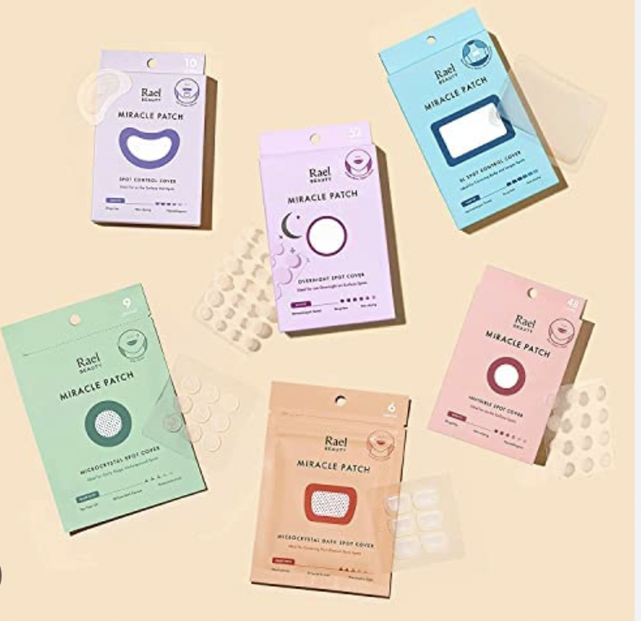
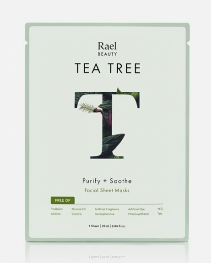
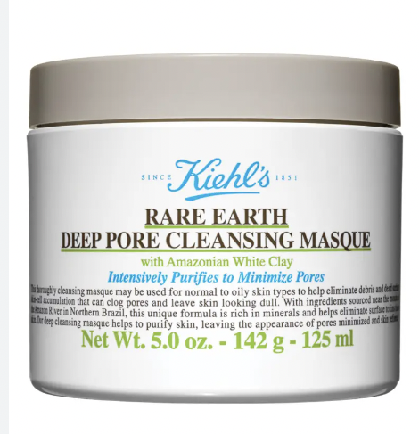
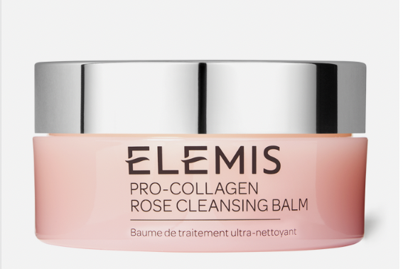

Skincare Extras
These are not a manditory part of any skincare routine, however if my skin is having a rough week theese defenitly help my skin perk up.
Rael's Pimple Patches

Rael's Tea Tree Oil Face Masks

Kiehl's Rare Earth Pore Mask

Elimis's Pro Collagen Cleansing Balm

Back to home